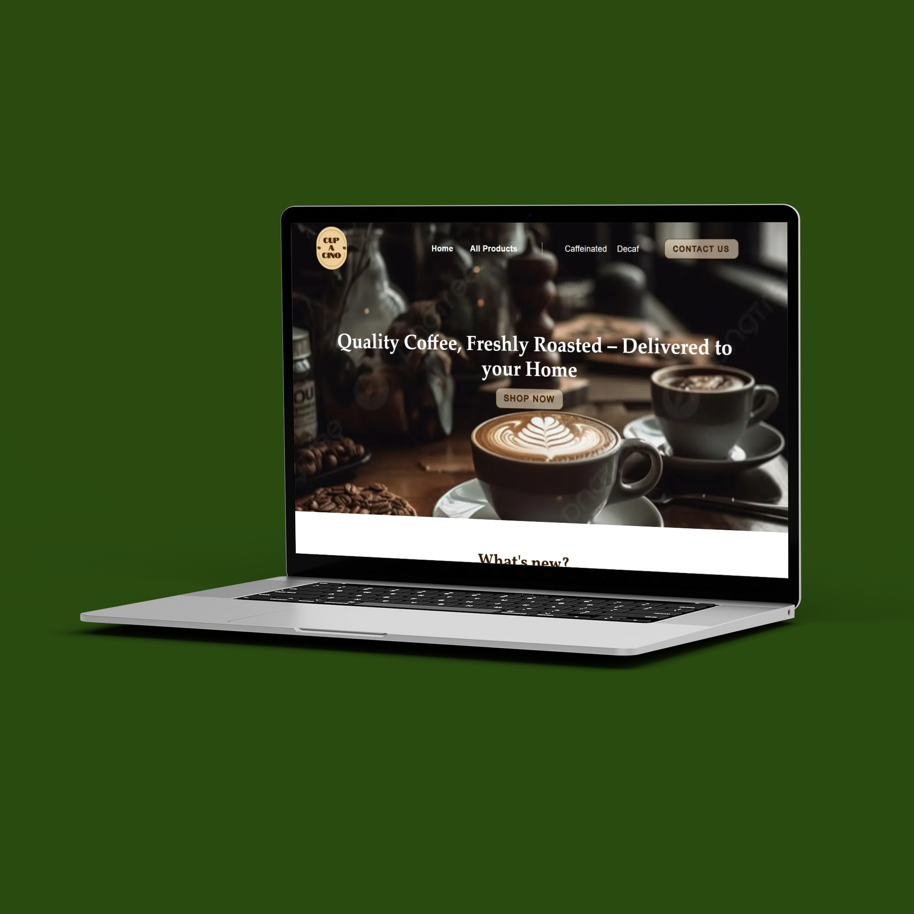

UX/UI Designer & Web Developer
Bekijk mijn werk ↓

Student Project — Sept 2024-Dec 2024


Groepsproject — Sept 2025-Dec 2025


Student Project — Sept 2025-Dec 2025


Ik ontwerp heldere interfaces en bouw gebruiksvriendelijke websites. Goed design maakt écht een verschil, en dat is precies waarom ik doe wat ik doe. Voor mij is design de plek waar logica en emotie elkaar ontmoeten. Ik werk het liefst met muziek op, een koffie binnen handbereik en ideeën die soms te wild beginnen maar altijd goed landen.